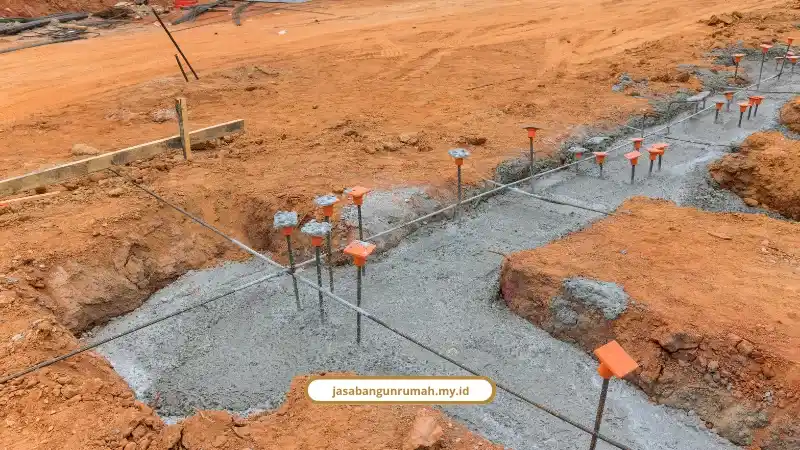

Daftar Isi
Harga borongan kontraktor Jakarta 2026 berkisar Rp 3,2 juta sampai lebih dari Rp 10 juta per meter persegi, tergantung grade material dan apakah sistemnya borongan full atau borongan jasa saja. Berikut rincian lengkapnya supaya Anda tidak salah hitung anggaran.
Banyak orang bikin RAB cuma modal tebak-tebakan dari internet. Padahal harga borongan kontraktor sangat bergantung pada spesifikasi material, kondisi tanah, dan aksesibilitas lokasi proyek.
Di Jakarta, faktor ini makin kompleks karena tanah lunak di beberapa wilayah butuh pondasi dalam, sementara lokasi di gang sempit menambah biaya lansir material secara manual.
Berapa Harga Borongan Full per Meter Persegi di Jakarta 2026?
Harga borongan full di Jakarta 2026 berkisar Rp 3,2 juta sampai Rp 10 juta lebih per meter persegi, sudah mencakup material dan jasa tukang sampai rumah siap huni.
| Tipe Bangunan | Estimasi Harga (Rp/m²) | Spesifikasi Utama |
|---|---|---|
| Kelas Standar/Minimalis | 3.200.000 - 6.000.000 | Material lokal, pondasi batu kali/cakar ayam standar, keramik 40x40, atap baja ringan |
| Kelas Menengah/Premium | 4.300.000 - 9.000.000 | Pondasi cakar ayam/bore pile, granit 60x60, sanitasi mid-range, kusen aluminium/kayu |
| Kelas Mewah/High-End | 5.600.000 - 10.000.000+ | Marmer impor, struktur bertingkat kompleks, smart home, sanitasi premium |
Sementara itu, jika Anda memilih sistem borongan jasa saja di mana material disediakan sendiri, kisaran biayanya:
- Bangun rumah baru: Rp 900.000 - Rp 2.500.000 per m²
- Renovasi total: Rp 1.000.000 - Rp 1.800.000 per m²
Untuk gambaran biaya renovasi per skala pekerjaan di DKI Jakarta:
- Renovasi ringan: Rp 2.500.000 - Rp 3.500.000 per m²
- Renovasi sedang: Rp 3.500.000 - Rp 5.000.000 per m²
- Renovasi total: Rp 5.000.000 - Rp 7.500.000 per m²
Sebagai pembanding data resmi, Dinas Cipta Karya Tata Ruang dan Pertanahan (DCKTRP) DKI Jakarta mencatat harga satuan bangunan untuk rumah tinggal 1 lantai 2 kamar sebesar Rp 10.222.974,26 per m², gedung kantor 1 lantai Rp 6.704.587,44 per m², dan gedung 4 lantai plus atap mencapai Rp 11.130.153,77 per m².
Berapa Standar Upah Tukang Harian di Jakarta 2026?
Standar upah tukang harian di Jakarta 2026 berkisar Rp 130.000 untuk kenek sampai Rp 300.000 untuk mandor, tergantung tingkat keahlian dan spesialisasi pekerjaan.
Rincian upah harian per posisi:
- Kenek/kuli bangunan: Rp 130.000 - Rp 160.000/hari
- Tukang batu/umum: Rp 200.000 - Rp 240.000/hari
- Tukang cat/plafon: Rp 200.000 - Rp 230.000/hari
- Tukang keramik/granit: Rp 220.000 - Rp 250.000/hari
- Tukang listrik & pipa (MEP): Rp 220.000 - Rp 275.000/hari
- Kepala tukang/mandor: Rp 250.000 - Rp 300.000/hari
Untuk pekerjaan parsial atau renovasi terbatas, ada juga rincian upah borongan per item:
- Galian tanah pondasi: Rp 95.000 - Rp 135.000/m³
- Pemasangan bata ringan (hebel): Rp 45.000 - Rp 60.000/m²
- Plesteran dan aci dinding: Rp 85.000 - Rp 110.000/m²
- Pemasangan granit 60x60: Rp 70.000 - Rp 90.000/m²
- Pemasangan plafon gypsum: Rp 45.000 - Rp 70.000/m²
- Pengecatan dinding: Rp 25.000 - Rp 60.000/m²
- Pemasangan rangka atap baja ringan: Rp 120.000/m²

Apa Saja Faktor yang Bikin Biaya Konstruksi di Jakarta Membengkak?
Faktor utama pembengkakan biaya konstruksi di Jakarta adalah kondisi tanah, aksesibilitas lokasi, volatilitas harga material, dan kompleksitas desain arsitektur.
Beberapa penjelasannya:
- Daya dukung tanah: Tanah lunak di sebagian wilayah Jakarta butuh pondasi dalam seperti bore pile atau strauss pile, yang bisa memakan 15-20 persen dari anggaran struktur.
- Aksesibilitas: Lokasi proyek di gang sempit butuh biaya lansir material manual tambahan.
- Volatilitas material: Pemilihan marmer versus granit, kayu versus aluminium, serta fluktuasi harga semen dan besi tulangan tahun 2026.
- Kompleksitas desain: Bentang lebar, fasad rumit, atau struktur tak simetris butuh spesialisasi tenaga kerja lebih tinggi.
Wahyu Ardiyanto, pengamat properti dari Brighton Real Estate, menyarankan pemilik rumah tetap menyiapkan dana cadangan sebesar 10 persen dari total RAB untuk mengantisipasi penyesuaian di lapangan.
Kenapa Sistem Borongan Lebih Aman Dibanding Harian?
Sistem borongan lebih aman dibanding harian karena biaya lebih terukur, jadwal tidak mudah molor, dan ada kontrak tertulis yang mengikat kedua pihak.
Suhabdi, mandor bangunan dengan pengalaman 30 tahun di DKI Jakarta dan Tangerang, menegaskan untuk proyek bangun rumah dari nol atau renovasi skala besar, sistem borongan lebih disarankan karena biaya lebih terukur dan jadwal tidak membengkak.
Kuncinya ada pada Surat Perjanjian Kerja (SPK) tertulis yang merinci spesifikasi material, tenggat waktu, dan pembayaran berbasis termin.
Erlang Sinatrya, spesialis arsitektur dari Maroon Arsitek, menambahkan bahwa estimasi harga per meter persegi di internet sering belum mencerminkan kondisi lapangan sebenarnya.
Pemilik lahan perlu menyusun Bill of Quantities (BoQ) dan RAB yang dihitung per satuan volume teknis, bukan sekadar perkiraan kasar.
Kalau Anda ingin memahami bagaimana alur kerja borongan full dari konsultasi sampai serah terima kunci, kami sudah bahas detail di tahapan proses kerja kontraktor rumah.
Kenapa Memilih Jasa Bangun Rumah untuk Kebutuhan Borongan Anda?
Jasa Bangun Rumah menjadi pilihan tepat untuk kebutuhan borongan karena menyediakan RAB transparan per satuan volume, tenaga ahli bersertifikat, dan garansi struktur untuk setiap proyek yang dikerjakan.
Layanan kami mencakup solusi satu pintu dari perencanaan sampai serah terima kunci, meliputi:
- Jasa arsitek dan desain
- Jasa kontraktor rumah dan bangunan komersial
- Penyusunan RAB dan pengawasan konstruksi
- Manajemen proyek dan pengurusan PBG/IMB
Kami sudah berdiri sejak 2010 dan menyelesaikan lebih dari 250 proyek dengan tingkat kepuasan klien 98 persen. Tim terdiri dari arsitek dan insinyur sipil bersertifikat yang mematuhi standar SNI dan K3.
Budi Santoso, klien rumah tinggal kami, menyebut proses pembangunan rumahnya berjalan rapi dengan kabar perkembangan proyek yang rutin. Siti Aminah, pemilik ruko, mengaku RAB transparan sejak awal membuat renovasi rukonya bebas biaya tak terduga dan selesai lebih cepat dari jadwal.
Sementara Dewi Lestari, klien desain interior kami, merasa desain yang diusulkan benar-benar mencerminkan karakter keluarganya.
Untuk kebutuhan yang lebih luas dari sekadar bangun rumah tinggal, kami juga melayani jasa kontraktor bangunan komersial dan layanan lainnya sesuai kebutuhan proyek Anda.
Jangan Bangun Rumah Tanpa Acuan Harga yang Jelas
Harga borongan kontraktor di Jakarta memang bervariasi tergantung grade material, sistem kerja, dan kondisi lapangan. Tapi dengan acuan data yang jelas seperti di atas, Anda bisa menyusun anggaran lebih realistis tanpa takut kena biaya siluman.
Jasa Bangun Rumah siap membantu menyusun RAB dan estimasi borongan sesuai kebutuhan proyek Anda di Jakarta dan Jabodetabek, lengkap dengan SPK tertulis dan garansi struktur.
Konsultasikan kebutuhan proyek dan dapatkan estimasi RAB gratis sekarang melalui WhatsApp 0889-8964-3555.